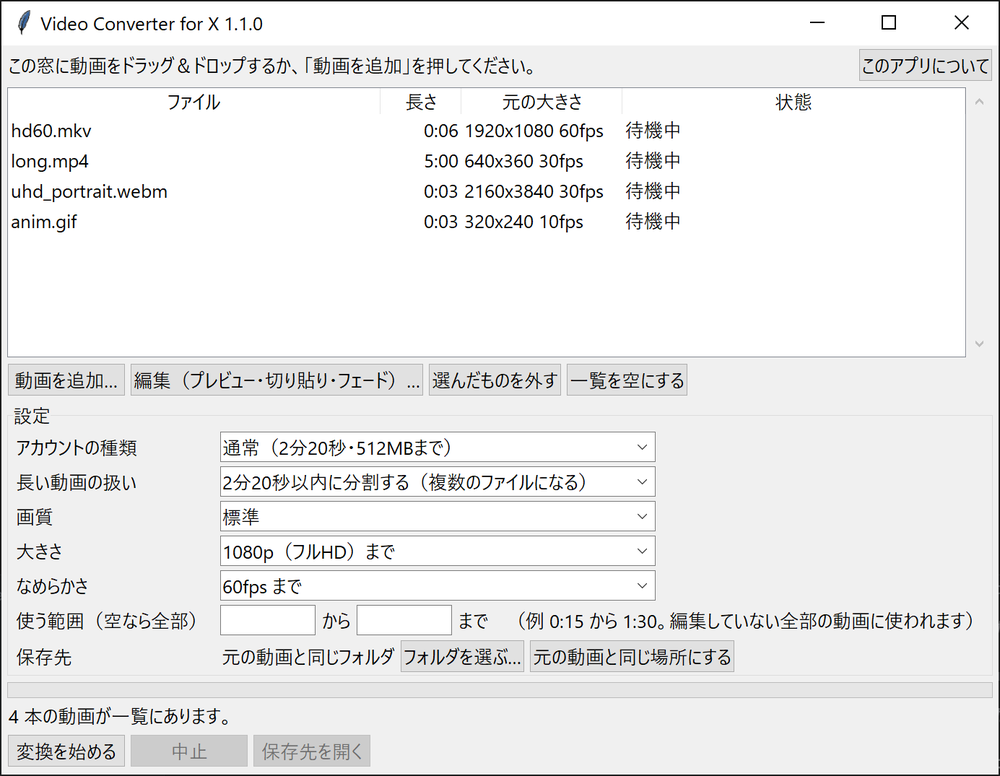
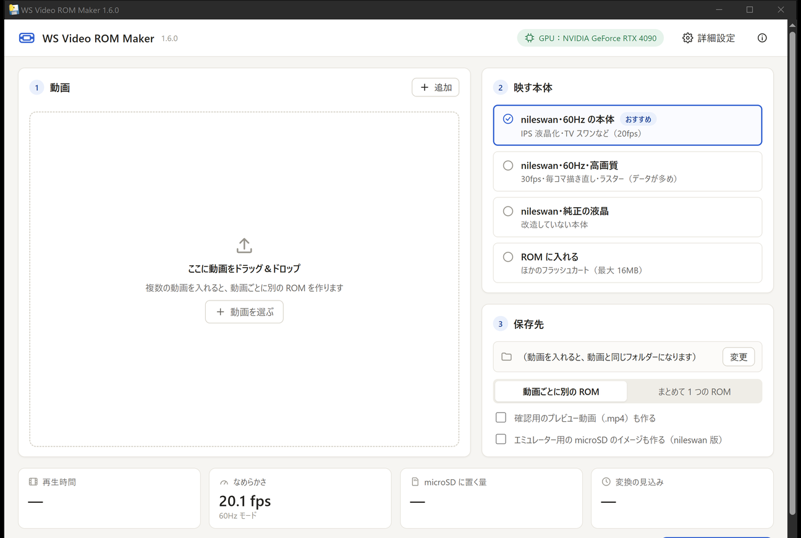
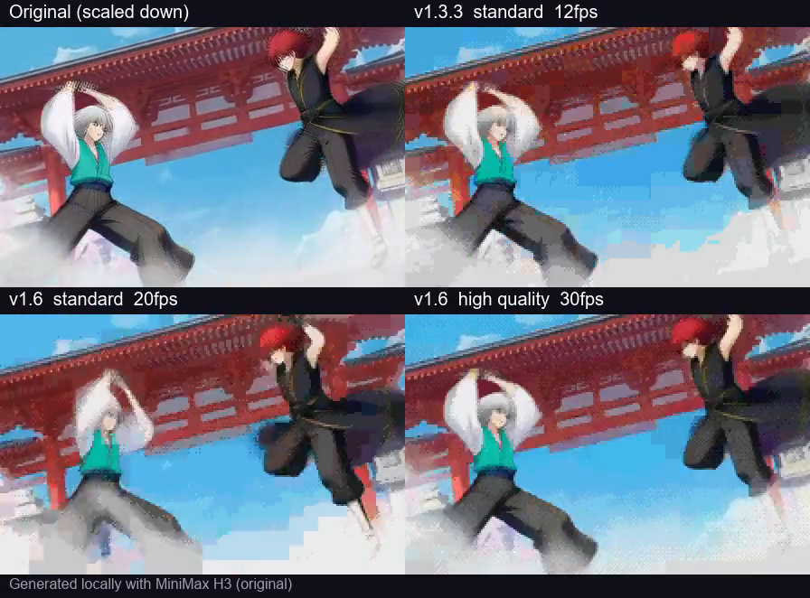
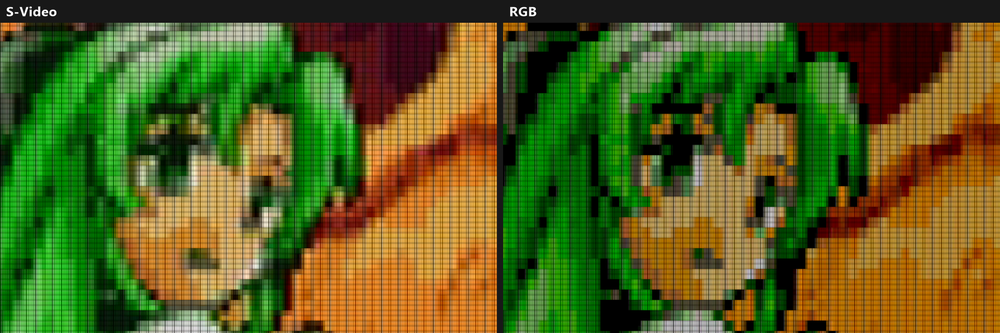
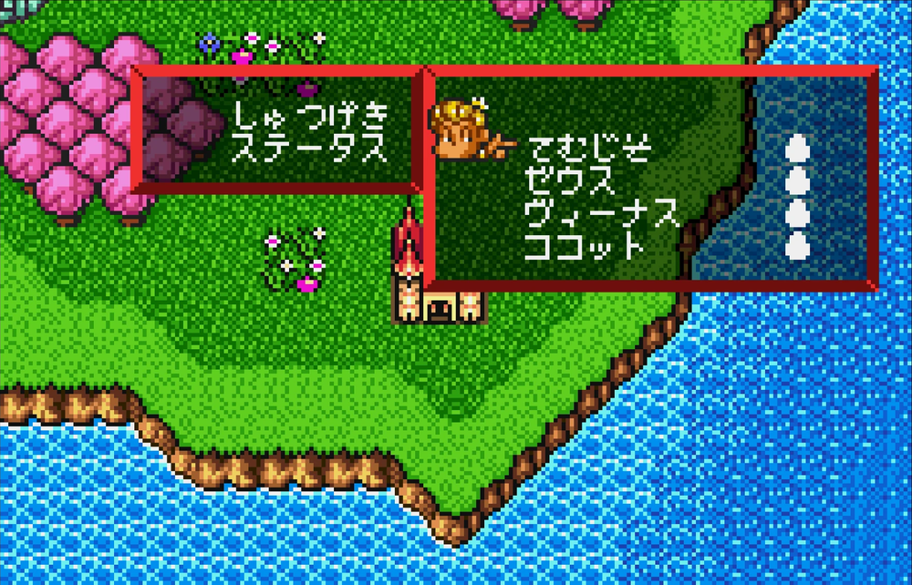
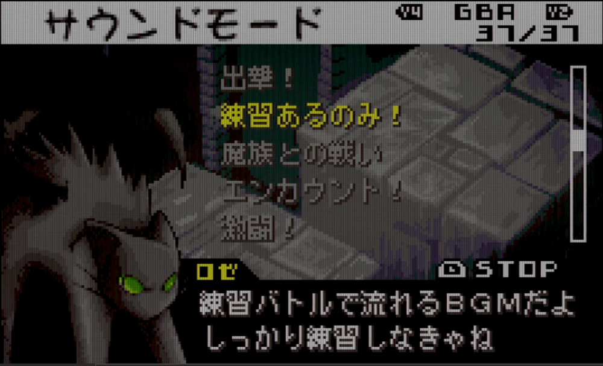

BW の倉庫
作ったツールやパッチ、調べた事の置き場です。
ツール（Windows 用・無料）
Video Converter for X 公開中

動画を X（旧 Twitter）に投稿しやすい MP4 に変換するアプリです。長い動画の分割、HDR の色直し、簡単な切り貼りとフェードもできます。
非公式のツールです。X Corp. とは関係ありません。「X」「Twitter」は X Corp. の商標です。
WS Video ROM Maker 公開中

動画を、ワンダースワンカラー／スワンクリスタルの実機で再生できる形に変換するアプリです。nileswan なら、高画質で 30 コマ/秒、アニメ 1 話分の長い動画も再生できます。
再生には、nileswan などのフラッシュカートリッジが必要です（nileswan がなくても、エミュレーターで見られます）。非公式のツールです。株式会社バンダイ、nileswan の開発者とは関係ありません。
解説・記事
ワンダースワンカラーで 30 コマ/秒のカラー動画 公開中

WS Video ROM Maker 1.6 の紹介です。前の版との比べる動画と、パレット・ラスター・DMA・ハイパーボイスなど、ワンダースワンカラーと nileswan のどんな機能を使ったかを説明しています。
TVスワンを RGB で映す 公開中

バンダイの TVスワン（ワンダースワンカラーをテレビに映す機器）を、RGB 出力にした記録です。S端子との画質の比較、必要な物、基板の改造、つまずいた所をまとめています。
貴重な機器の改造です。試すときは自己責任でお願いします。映す側の機器を選びます（記事の中で説明しています）。
TVスワンとは 公開中
店頭の試遊台などに使われた TVスワンについて、機種のバリエーション、端子と付属品、基板の中身、知られている不具合をまとめたページです。
写真と図は準備中です。順に足していきます。
RetroTINK 4K の覚え書き 公開中

RetroTINK 4K の設定で、つまずいた所と、分かった事をまとめたページです。保存の落とし穴、倍率の決め方、明るさの合わせ方などを、日本語で書いています。TVスワン用の設定例も載せています。
ファームウェア 1.99.19 で試した内容です。版が変わると、項目の名前や動きが変わる事があります。
ワンダースワン用パッチ
どれも「差分パッチ」だけの配布です。ゲーム本体（ROM）や音楽データは含まれていません。ご自身で持っているものに当てて使います。
半熟英雄（ワンダースワンカラー版）メニュー画面のちらつき修正 公開中

メニュー画面の激しい点滅をなくす差分パッチです。スワンクリスタル、TVスワン、HDMI 出力に改造した本体など、点滅が目立つ環境向けです。
TVスワン、スワンクリスタル、WSC HD で確認しています。
約束の地リヴィエラ（ワンダースワンカラー版）nileswan 用 BGM パッチ 公開中

nileswan（フラッシュカートリッジ）の microSD に置いた曲を、ゲームの BGM として流せるようにする差分パッチです。パッチ当てと曲のファイル作りをまとめて行える、Windows 用のツールもあります。
nileswan 専用です。曲のデータは含みません。ご自身で用意した音声を使います。